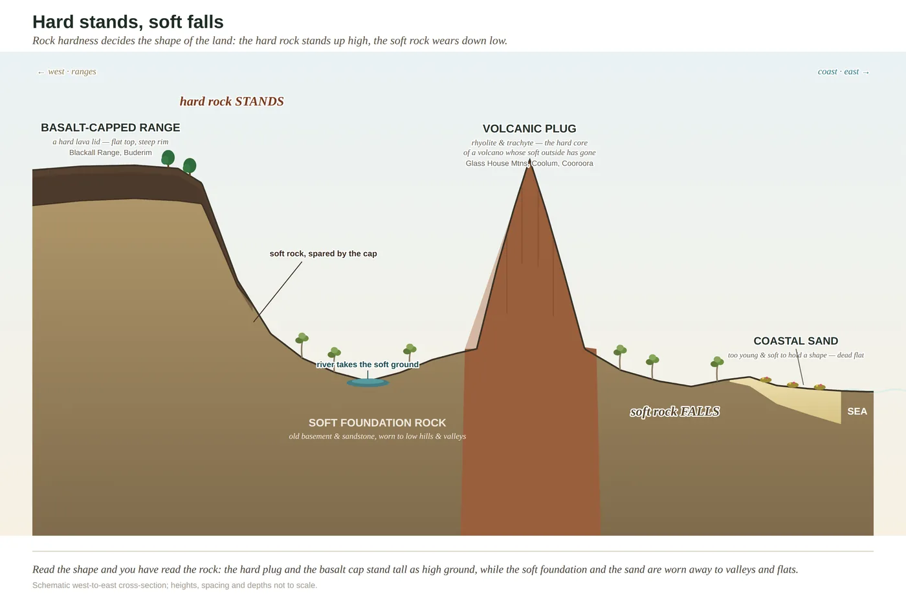

Rock
Everything starts with what's underneath.
The stone at the bottom decides what grows at the top. Dark basalt on the range breaks down into deep red, fertile soil — rainforest ground. Poor stone, and old bleached sand, give you hungry country and heath. The steep blue peaks are the hardest rock of all: the burnt-out cores of ancient volcanoes, left standing while everything softer around them wore away. Learn to see the rock and you can predict the soil before you've even looked at it.